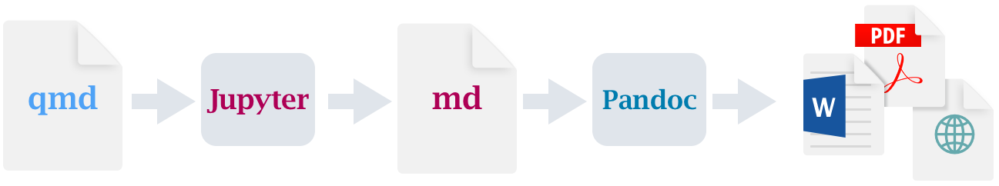

Useful tools for the academic
Throughout my time in academia, there are many instances where I witnessed the quickness of my colleagues in picking up and gaining proficiency in some new skills or tools that serves to enhance their work.
These not only include new domain knowledge, e.g., learning machine learning to solve a niche problem, but also tools that aids in their work. The regnant LaTeX need no introduction, and picking up C/C++ to speed up computation or learning Git for collaborative work are quite common.
However, it seems to me that many are satisfied in their “local minima”, and do not have the time or effort to look for new tools that might enhance their work. Therefore, here I introduce some tools that I found to be useful that I think more academics should use1.
1 This list might be updated as more tools prove themselves useful.
Pandoc
Pandoc is a universal document converter. It can convert MS Word to and from LaTeX, an HTML page to EPUB, or MS PowerPoint to HTML, and many more! However, the most popular feature of the universal converter is the ability to write in Markdown and convert it to a document or a presentation slide.
Here, we write in simple Markdown and convert to a PDF document via LaTeX2.
{kind=link}
{kind=link}
For a long time I have used Pandoc for all my write-ups, notes, and presentation slides due to the simplicity of writing Markdown over LaTeX, MS Word, and MS PowerPoint3, but I have since moved to better tools below.
3 Combined with wrangling data in Python/Julia/R over MS Excel, I have completely ditched MS Office.
Quarto
Coming from the lovely R community and building on top of Pandoc, Quarto is the successor to R Markdown, an attempt at literate programming. R Markdown does the same as Pandoc, allowing one to write in Markdown and outputs to documents and presentations etc., with the exception that it also allows one to run and output R code inside the document. Quarto extends this functionality to include Python, Julia, and Observable in addition to R.

This functionality allows us to mix computation with its documentations, explanations, or mathematics in the same document.
{kind=link}
This allows for reproducible research where the codes and outputs are contained in the same research write-up, and is perfect for cases where one wants to share technical reports complete with implementation details to a colleague.
But this is not all! Even without using the ability to run code in your documents, Quarto can still do a lot more, e.g., writing books, creating dashboards for data science, or creating web apps to interact with data4. One can also publish to Quarto Pub to share their Quarto documents easily.
4 In fact, this very website is written in Quarto!
Typst
Typst is a modern typesetting system that aims to be an alternative to LaTeX. Fast, easy, sensible, with an actual scripting language, and actively developed, it has completely replaced LaTeX for me except for papers that are submitted for publication5. I even made a conference poster recently with Typst6.
5 As far as I am aware, IJIMAI is the only journal that accept Typst at this point of time.
6 The package peace-of-posters can be used to easily create posters. 
Not only does Typst has a simple Markdown-like syntax, it is also extremely fast, allowing almost instant live previews while typing.
Typst also has an active package ecosystem, from drawing diagrams with CeTZ, creating presentation slides with Touying, drawing quantum circuits with Quill, to plotting with Lilaq, Typst covers my entire workflow. My research notes that I share with my colleagues are written in Typst, I make diagrams in Typst, and I make worksheets for students in Typst.
Typst has also gained enough popularity that Pandoc and Quarto now supports it as a PDF backend in place of LaTeX. It even comes preinstalled in Quarto. Unlike LaTeX, there are almost no wait time in compiling a document, and error messages are not cryptic, making Typst a good PDF backend for Quarto7.
7 Take a look at the talks “Never again in outer par mode” from Posit Conference 2023 and “Styling Quarto PDFs with Typst” from SatRdays London 2024, where they discusses the advantages of using Typst over LaTeX in Quarto
An RSS feed reader
You most likely have come across this little orange icon  in your time on the internet. In fact, there is one at the top right of this very site (though it’s not orange). This is RSS (Really Simple Syndication), a standardized format to aggregate news or contents into a single feed.
in your time on the internet. In fact, there is one at the top right of this very site (though it’s not orange). This is RSS (Really Simple Syndication), a standardized format to aggregate news or contents into a single feed.
Imagine having a single feed where you can read articles from multiple sources such as news websites, right when they are published. This is not an uncommon concept as some smartphones such as the iPhone provides such features with their news app. So how is this useful for academics?
Well, turns out journals typically provide a link to subscribe to their RSS feed too. One can then easily keep up with current research in journals relevant to their fields by aggregating them into a single RSS feed reader.
{kind=link}
I check the feed every day, reading through the titles, and then the abstracts for titles that caught my attention. If I find the paper interesting or relevant, I can easily open the paper on a browser with a single hotkey to download or add it to my bibliography manager.
I am subscribed to 11 journals, totaling to around 50 to 100 new papers everyday (arXiv takes up the bulk of this number), a number that is small enough that it’s not a hassle to go through the feed every day8.
8 I’m also subscribed to some news site and even some YouTube channels, eliminating the need for an account.
{kind=link}
Given how important keeping up with current developments in the field is for a researcher, an RSS feed reader (and there are many) makes the aggravating task of checking for new papers effortless, and greatly increases one’s exposure to current research.
Marimo over Jupyter
Here’s a bonus one.
I take the somewhat popular yet controversial opinion that Jupyter notebooks are a scourge to scientific research. There are some annoying issues, such as how it’s saved as JSON instead of plain Python files, and how it teaches bad programming practices and habits to scientists. The latter can easily compound with carelessness to lead to invisible bugs and mistakes that produce wrong results, which might even end up in published research9!
9 I haven’t encounter many researchers who actually write unit tests for their spaghetti code function.
But much more troubling is the fact that Jupyter notebooks increase the chances of making these mistakes due to the creation of hidden states. In fact, a study showed that out of over 800 000+ valid notebooks on GitHub, only ~24% are executed without errors, and only ~4% produced the same results (Pimentel et al. 2019).
Perhaps this warrant a separate post10, but in short, if one wants to present some results with their corresponding codes, use Quarto, and if one really require a notebook environment, use Marimo, an alternative to Jupyter notebooks (only for Python).
10 For now, take a look at this talk from JupyterCon 2018 to understand some of the problems with Jupyter notebooks, as well as this FAQ from Marimo.
The main difference between Marimo notebooks and Jupyter notebooks is the fact that the former is reactive. What this means is that Marimo notebooks always run in the correct order and always rerun the entire notebook on edits, eliminating the hidden states that plagues Jupyter notebooks.
If a code cell defining a variable is deleted, but the variable is used elsewhere, an error will be thrown. On the other hand, Jupyter notebooks continue to sneakily use that variable even when the programmer meant to remove it from the program.
A researcher should be aware of how certain shortcomings of their tools can be detrimental to their work, and should be open to finding alternatives or engage in self-improvement to eliminate them to minimize bad research outputs.
For example, learning to write properly unit tested functions instead of spaghetti codes, or learning to use type hinting in Python (which has been around since version 3.5) to pair with type checkers to minimize invisible bugs caused by carelessness that can lead to wrong published results.